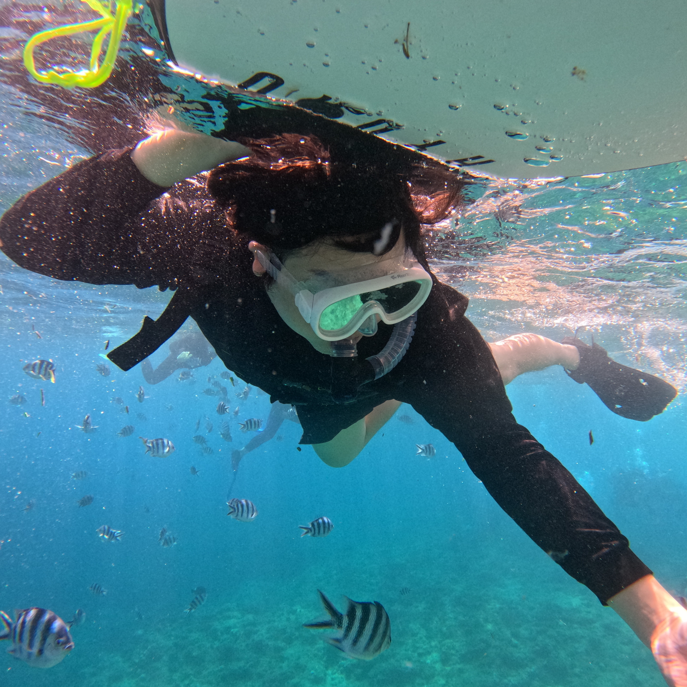
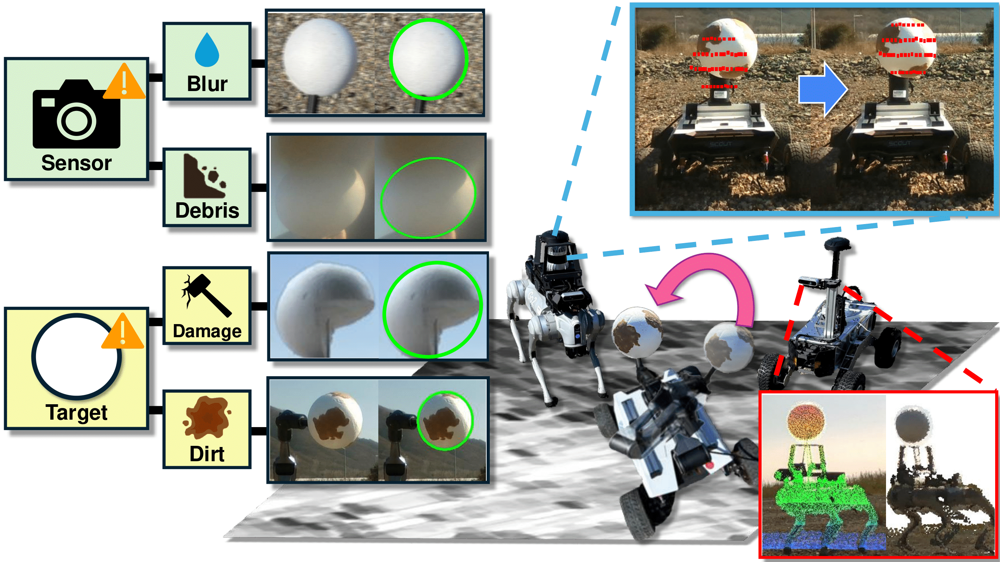
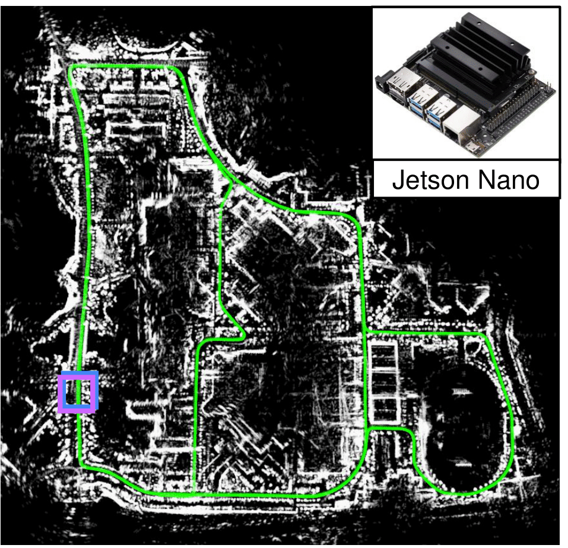
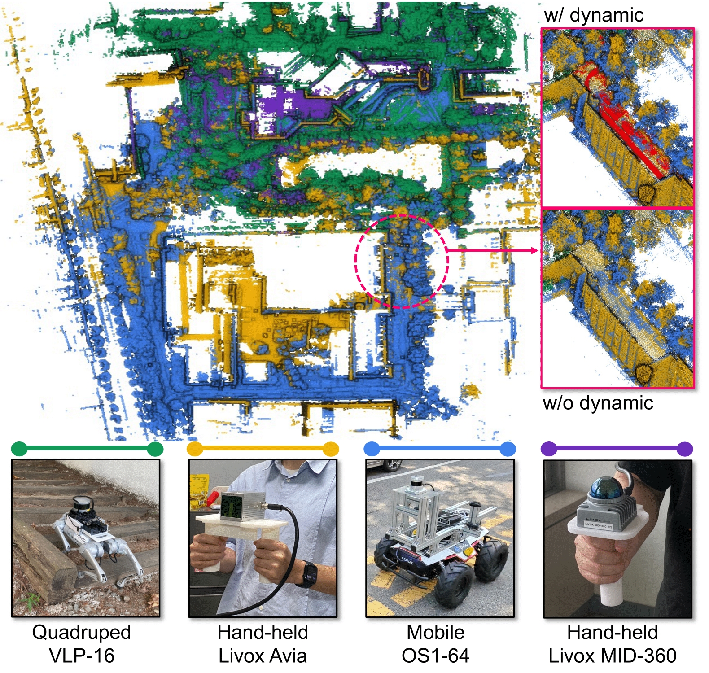
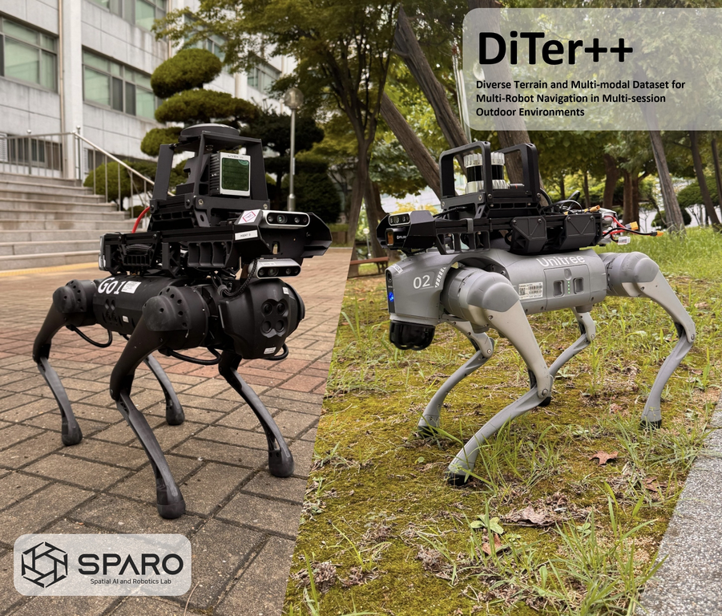

Hogyun Kim
I'm a PhD student in the Department of Electrical and Computer Engineering at Inha University, advised by Younggun Cho in SPARO Lab. I also received my B.S. in Naval Architecture and Ocean Engineering from Inha University. My research focuses on scalable and collaborative robot autonomy in multi-robot systems, studying how robots perceive, map, and operate in shared environments through communication-efficient coordination and interaction.
News
Research
My research interests lie in multi-robot systems spanning both robot autonomy and interaction. To date, my work has focused on multi-robot SLAM and place recognition for shared environmental perception, with an emphasis on communication-efficient knowledge mapping and sharing. Some papers are highlighted.

Commerge: Communication-Efficient, Robust and Fast LiDAR Map Merging Framework for Multi-Robot Coordination in Resource-Constrained Scenarios
Communication-Efficient Multi-Robot Map Merging Framework

KISS-IMU: Self-supervised Inertial Odometry with Motion-balanced Learning and Uncertainty-aware Inference
Self-Supervised Inertial Odometry (IO)

MARSCalib: Multi-robot, Automatic, Robust, Spherical Target-based Extrinsic Calibration in Field and Extraterrestrial Environments
Multi-Robot, Spherical Target-based LiDAR-camera Calibration

SKiD-SLAM: Robust, Lightweight, and Distributed Multi-Robot LiDAR SLAM in Resource-Constrained Field Environments
Multi-Robot and Distributed LiDAR SLAM Framework

Narrowing your FOV with SOLiD: Spatially Organized and Lightweight Global Descriptor for FOV-constrained LiDAR Place Recognition
Lightweight LiDAR Place Recognition

ReFeree: Radar-based Lightweight and Robust Localization using Feature and Free space
Lightweight Radar Place Recognition




DiTer: Diverse Terrain and Multimodal Dataset for Field Robot Navigation in Outdoor Environments
Multi-Modal Legged Robot Datasets